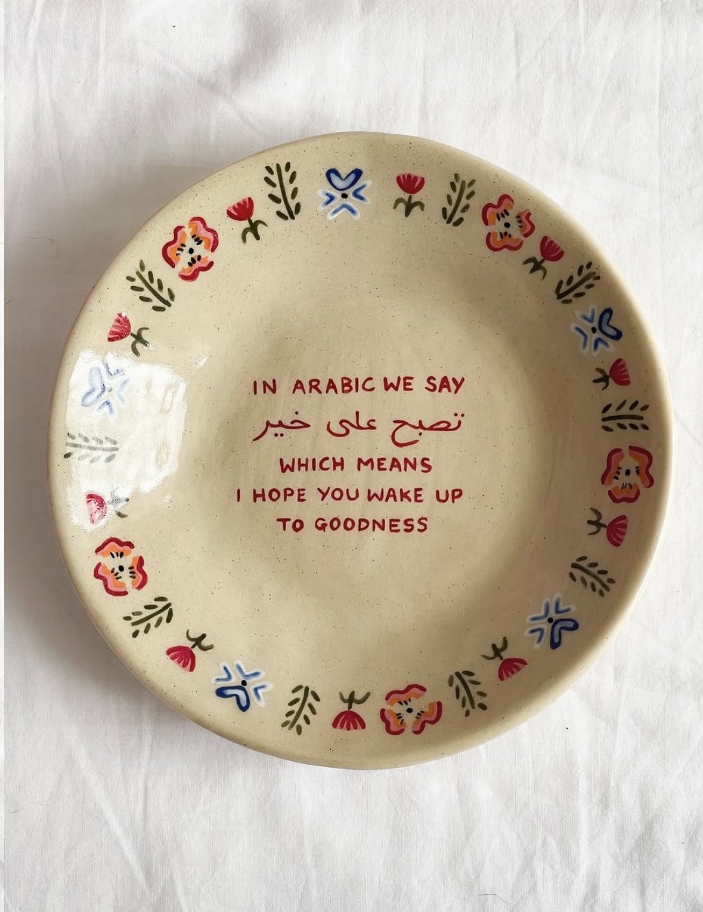

When Arabic proverbs are translated into Latin-based languages like English,
much of their meaning is lost because they are deeply embedded in cultural,
religious, and linguistic contexts that do not transfer cleanly across
languages. Arabic relies on flexible sentence structures, rich morphology,
and layered semantics, where meaning is shaped as much by tone, rhythm, and
shared belief systems as by literal words. Many proverbs emerge from oral
tradition, faith, and everyday social practices, making them interpretive
rather than fixed. When translated literally, they often become imprecise
or distorted; when translated functionally, they risk losing their emotional
weight and cultural specificity. This creates ambiguity, multiple
interpretations, and non-equivalence, rendering some proverbs effectively
untranslatable. What remains is a fragmented version of the original—technically
accurate, yet detached from the lived experience that gives the proverb its power.
I am Egyptian and I was born and raised in Qatar. I grew up speaking Arabic
and English, sometimes mixing in different languages when speaking with family
and friends. I never had a problem with expressing what I want to say. I always
felt in ease when switching from one language to another until I came to the US.
I realized that there is a lot that I cant say to any non-arabic speaker unless I
take a couple of miuntes to think about the right words to use while translating
and I slowly realized its always the Arabic proverbs.

One day, I came across Yamine Daaboul's work on Instagram. Yamine is a British-Syrian
artist based in London. Her series "in Arabic we say" celebrates the beauty of everyday
Arabic expressions: from blessings to words of welcome painted by hand on limited-edition
plates. "A tribute to Language, culture and true epitome of love" she says.
This is the list of Arabic phrases that Yamine chose for her work: